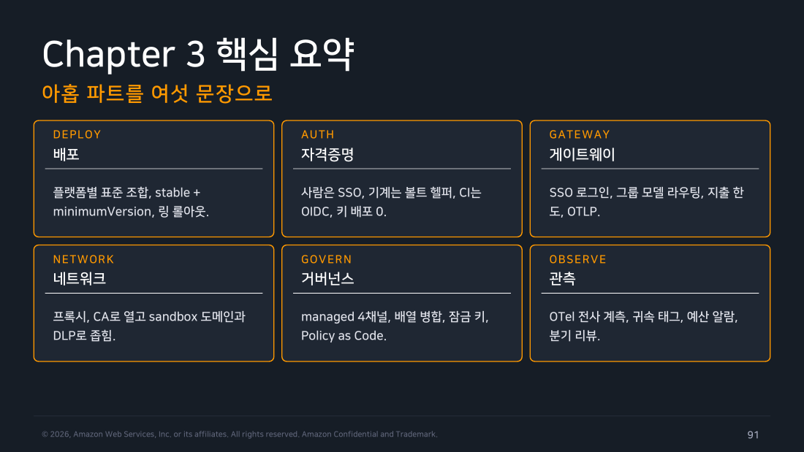
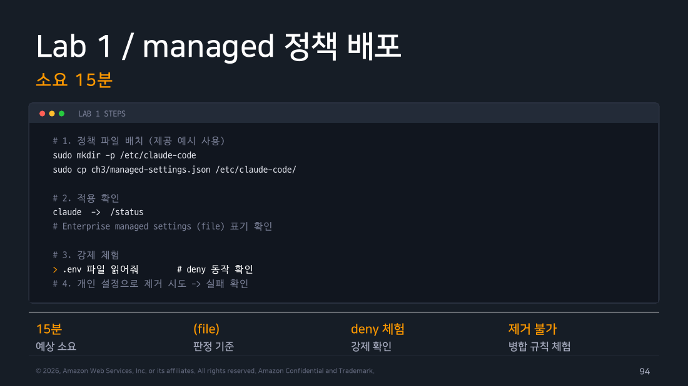
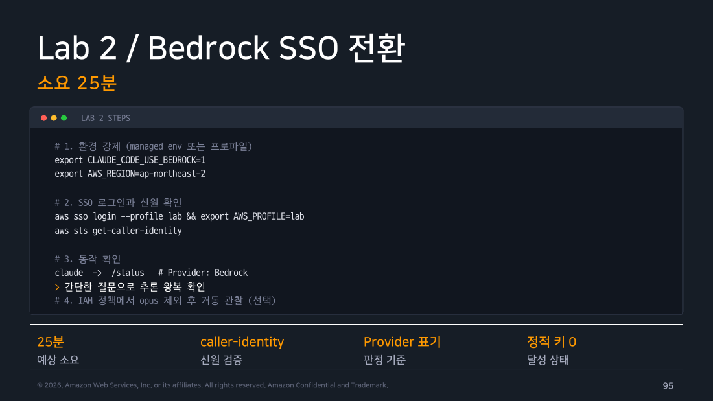
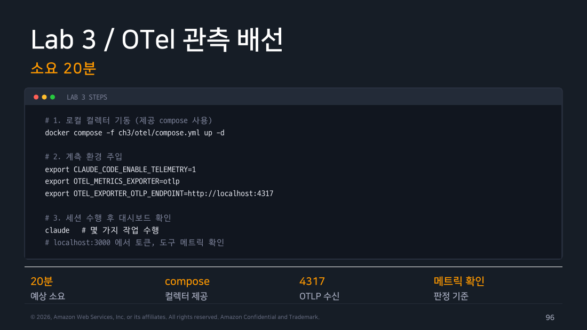
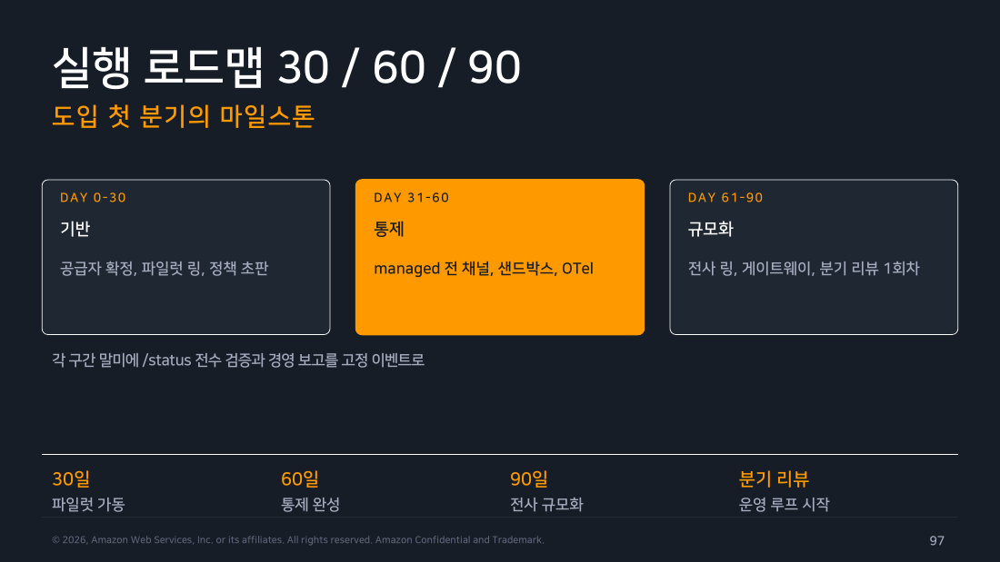

Part 8 — 트러블슈팅, 정리와 실습 랩¶
한 줄 요약¶
관리자 문의는 인증·네트워크·성능 세 갈래로 나뉩니다. 어느 경우든 처음에 모을 자료는 같습니다. claude doctor//doctor, /status, /context, --debug-file 로그를 묶은 진단 번들(문의를 접수할 때 항상 함께 받는 고정 자료 세트)입니다. 이 번들이 헬프데스크와 최종 지원 창구가 같은 정보를 바탕으로 대화하게 해 줍니다.
이번 주 실습에서는 랩 시나리오보다 배포한 정책을 그대로 믿으면 안 된다는 점이 더 크게 남았습니다. 시스템 전역 경로에 sudo로 정책을 배포했는데도 규칙 하나(Write(**))가 조용히 무효화되고 있었습니다. --debug를 켜기 전까지 경고도 없었습니다. "정책이 배포됐다"와 "정책이 의도대로 작동한다"는 별개임을 직접 확인했습니다.
이번 파트의 개인 행동 1개¶
claude doctor와 /status로 로컬 진단 번들의 범위를 확인합니다. 개인 학습 환경에서는 실제 조직 티켓·IdP·예산·gateway 설정을 바꾸지 않습니다. Task 2의 Bedrock SSO는 개인 클라우드에서, 전사 정책·조직 IdP·CloudTrail·gateway는 조직 관리자 권한에서 다뤄야 합니다. 부분 완료·미실행 표시는 현재 검증 범위입니다.
1. 트러블슈팅 — 관리자에게 오는 문의의 지도¶
관리자 문의는 크게 세 갈래로 갈립니다.
인증 문제는 원인이 비교적 단순합니다. 로그인이 꼬이거나 계정이 혼선이 생겼다면 공식 1순위 처방은 /logout 후 /login 재시도입니다. Enterprise 옵션이 보이지 않는다면 claude update 뒤에 터미널을 재시작하지 않아 구버전이 계속 실행되는 경우가 많습니다. "조직 미배정" 메시지는 좌석(라이선스)에 Code 권한이 포함되지 않은 경우이므로 어드민 콘솔에서 좌석을 갱신해야 합니다.
Bedrock(AWS가 제공하는 모델 호출 서비스) 자격 실패는 aws sso login 세션 만료가 제일 흔합니다. 그래서 aws sts get-caller-identity로 "지금 내가 누구로 인식되고 있는지"부터 확인합니다. apiKeyHelper처럼 스크립트가 API 키를 대신 공급하는 구조라면, 볼트 권한이나 TTL 캐시(키를 일정 시간 재사용하는 캐시)를 의심하기 전에 그 스크립트를 단독으로 실행해 보는 게 빠릅니다.
네트워크 문제는 Part 4에서 다룬 진단표를 그대로 요약판으로 씁니다. 확인 순서는 이렇습니다.
- 타임아웃:
HTTPS_PROXY/HTTP_PROXY/NO_PROXY와 소문자 변수의 우선순위,NO_PROXY형식, SOCKS 미지원, 방화벽 도메인 허용 목록 - TLS 체인 오류: 사내 CA(회사가 자체 발급한 인증서 발급 기관) 인증서가 시스템에 등록되지 않았는지
- 407 응답: 인증이 필요한 프록시(407은 "프록시 인증 필요"를 뜻하는 HTTP 응답 코드)
- 스트리밍이 중간에 끊김: MTU(한 번에 보낼 수 있는 패킷 최대 크기) 설정과 보안 검사 장비의 버퍼링
- 일부 기능만 죽음: 도메인이 부분적으로만 차단된 경우
- sandbox 자체가 막음:
allowedDomains에 필요한 도메인이 빠졌거나, 엄격 차단이 필요하면strictAllowlist: true(또는 managed의allowManagedDomainsOnly)가 적용됐는지
curl -v로 어느 계층에서 막혔는지 분리해 보는 것이 네트워크 문의의 출발점입니다. Part 4에서와 같습니다.
성능 문제는 "느리다"는 한마디를 네 갈래로 쪼개는 데서 시작합니다. 사용자는 "느려요" 한마디만 남기지만, 원인은 서로 완전히 다른 곳에 있습니다.
flowchart TD
Q{"느리다는 문의,\n어디부터 뜯어볼까"}
Q --> P["<b>경로 지연</b><br/>프록시·검사 장비 홉을 세고<br/>리전 지연부터 확인"]
Q --> M["<b>모델 선택</b><br/>무거운 모델이 기본값인가<br/>작업 대비 과사양인지 점검"]
Q --> C["<b>컨텍스트 비대</b><br/>긴 세션이 누적됐는가<br/>/context로 확인, /clear 안내"]
Q --> QT["<b>쿼터 스로틀</b><br/>리전 TPM 한도 도달<br/>429 비율 관측"]
style Q fill:#673ab7,stroke:#4527a0,stroke-width:3px,color:#fff
style P fill:#e3f2fd,stroke:#1976d2,color:#000
style M fill:#e3f2fd,stroke:#1976d2,color:#000
style C fill:#e3f2fd,stroke:#1976d2,color:#000
style QT fill:#e3f2fd,stroke:#1976d2,color:#000마지막 갈래의 용어만 풀어둡니다. TPM은 분당 처리할 수 있는 토큰 수 상한이고, 429는 "요청이 너무 많다"는 뜻의 HTTP 응답 코드입니다. 즉 리전에 걸린 한도에 부딪히면 요청이 대기하거나 거절되면서 체감 속도가 떨어집니다.
원인과 관계없이 진단 자료 수집은 표준화해 둡니다. 문의를 접수할 때 요청할 기본 자료는 다음과 같습니다.
claude doctor는 셸에서 실행하는 읽기 전용 환경 진단입니다. Claude Code가 아예 안 뜰 때 여기서 시작합니다./doctor는 세션이 뜬다면 세션 안에서 실행합니다. 같은 진단에 더해 수정 제안까지 하고, 확인을 받은 뒤 적용할 수 있습니다.claude --version으로 버전을 확인합니다./status는 어떤 공급자·모델을 쓰고 있는지, managed 설정이 어느 소스에서 왔는지 보여줍니다./context는 컨텍스트 창을 무엇이 얼마나 차지하고 있는지 보여줍니다.claude --debug-file claude-debug.log는 문제를 재현하면서 로그를 파일로 남깁니다. (--verbose는 턴 출력을 상세히 보여줄 뿐이라 진단 로그 수집용이 아닙니다.)
네트워크 문제라면 현재 provider/gateway의 실제 endpoint 검사 결과를 더합니다. Anthropic API 또는 WebFetch가 필요한 기능은 curl -v https://api.anthropic.com/ 결과도 별도로 붙입니다. Bedrock·Google·Microsoft·gateway 로그인 세션의 모델 인증·트래픽을 이 Anthropic URL 하나로 판정하지는 않습니다. 여기에 발생 시각·사용자·저장소 경로를 더하면 접수 양식이 완성됩니다.
에스컬레이션(문의를 윗 단계로 넘기는 절차)은 3선으로 나뉩니다. 1선 헬프데스크는 진단표 매칭과 계정·좌석 확인까지 맡습니다. 2선 플랫폼팀은 정책·네트워크·게이트웨이 같은 조직 인프라 영역을 봅니다. 3선은 두 갈래인데, Bedrock 쿼터나 서비스 이슈는 AWS Support로, 제품 결함이나 문서와 실제 동작이 다른 문제는 Anthropic 지원 채널로 넘깁니다. 표준화된 진단 번들이 이 세 선을 잇는 공용어 역할을 합니다.
현장 메모
진단 번들을 접수 양식에 포함하는 것이 이 절차에서 효과가 클 듯합니다. "느려요"라는 문의에 claude doctor + /context 캡처를 함께 받으면, 컨텍스트 누적은 1선에서 /clear 안내만으로 끝날 수 있어 2선 티켓이 줄어들 수 있습니다. 반대로 자료가 없으면 2선은 재현 정보를 다시 요청하는 것부터 시작해야 합니다. 에스컬레이션 정책을 문서로만 안내하기보다 헬프데스크 티켓 템플릿에 진단 번들 입력 필드를 필수로 두는 편이 실제로 지켜질 가능성이 높습니다.
2. Chapter 3 핵심 요약¶
아홉 파트를 다시 여섯 갈래로 묶으면 이렇게 정리됩니다.
- 배포: 플랫폼별 표준 설치 조합을 정하고,
stable+minimumVersion두 다이얼로 버전을 통제한 뒤, 링 롤아웃(소수 그룹부터 넓은 그룹으로 단계적으로 넓히는 배포)으로 완성됩니다. - 자격증명: 사람에게 SSO, 서버 같은 기계에 볼트 헬퍼, CI 파이프라인에 OIDC(비밀키 없이 신원을 증명해 단기 자격을 받는 방식)를 맡겨서 장기 API 키를 아무에게도 나눠주지 않는 상태를 지향하는 것이 핵심이었습니다.
- 게이트웨이: 그 SSO 로그인과 그룹별 모델 라우팅, 지출 한도, OTLP(관측 데이터를 표준 형식으로 내보내는 프로토콜)를 하나의 자체 호스팅 완제품으로 묶어주는 조각이었습니다.
- 네트워크: 프록시·CA로 들어오는 길을 열고, sandbox 도메인 허용 목록과 DLP(민감 정보가 밖으로 나가는 걸 막는 통제)로 나가는 길을 좁히는 이중 구조였습니다.
- 거버넌스: managed 설정 4채널과 배열 병합 규칙, 사용자가 못 바꾸게 잠그는 키, Policy as Code(정책을 문서가 아니라 저장소의 코드로 관리하는 방식)로 정책을 "코드처럼" 다루는 법을 보여줬습니다.
- 관측: 조직 도입안은 OTel 전사 계측, 팀·프로젝트 귀속 태그, 예산 알람, 분기 리뷰를 잇는 루프입니다. 이번 실습에서는 로컬 인라인 환경변수와
consoleexporter로 네 종류의 메트릭이 출력되는 것까지만 확인했습니다. 전사 배포·귀속 태그·알람·분기 리뷰는 실행하지 않았습니다.

▲ 교재 슬라이드 91 — Chapter 3 핵심 요약
여섯 갈래를 관통하는 질문은 하나입니다. "이것은 개인이 선택할 수 있는가, 조직이 강제할 수 있는가." Chapter 1, 2에서 다룬 설치·인증·권한·에이전트도 Chapter 3에서는 이 질문으로 다시 봅니다.
3. FAQ — 관리자 문의 상위 6¶
"개인이 정책을 우회할 수 있나요?" 못 합니다. managed 설정의 deny 규칙은 사용자가 제거할 수 없습니다. 권한 확인을 통째로 건너뛰는 --dangerously-skip-permissions 우회도 disableBypassPermissionsMode 설정으로 막을 수 있습니다(Part 5 병합 규칙).
"Bedrock인데 서버 관리 설정(Server-managed)이 되나요?" 안 됩니다. Server-managed는 좌석제(Teams/Enterprise) 전용이라, Bedrock처럼 서드파티 공급자를 쓰는 조직에는 설정이 전달되지 않습니다. 대신 대안이 하나뿐인 건 아닙니다. 파일 기반 / plist·HKLM 같은 OS 레벨 설정 / 자체 호스팅 apps gateway를 거친 원격 배포 세 가지 중에서 고를 수 있습니다(Part 3, Part 5 혼합 전략).
"개인별 지출 캡이 되나요?" Bedrock에 직접 연결하는 구성만으로는 안 됩니다. apps gateway가 제공하는 한도 Admin API가 있어야 일·주·월 단위 상한을 실시간으로 강제할 수 있습니다(Part 3).
"코드가 학습에 쓰이나요?" 상업 경로(Team/Enterprise/API/클라우드)는 학습에 쓰지 않는 것이 기본 정책입니다. 한 가지 오해하기 쉬운 점이 있습니다. ZDR(요청 완료 후 무저장)은 Enterprise 플랜을 사면 자동으로 딸려오는 기능이 아닙니다. 자격을 갖춘 계정에 한해 Anthropic이 조직 단위로 개별 활성화해 주는 별도 옵션입니다(Part 7).
"curl 우회는 어떻게 막나요?" 권한 규칙만으로는 못 막습니다. WebFetch를 deny해도 Bash를 허용해뒀다면 사용자가 curl을 직접 실행해 같은 주소로 접근할 수 있습니다. sandbox의 allowedDomains에 더해 strictAllowlist: true 또는 managed의 allowManagedDomainsOnly를 적용해야 허용 목록 밖 연결을 실제로 차단합니다(Part 4).
"적용 확인은 어떻게 하나요?" 전 플랫폼 공통으로 /status 한 줄이 판정 기준입니다. 설정 소스가 괄호 안에 표시되는데, 거기에 remote, plist, HKLM, HKCU, file 중 무엇이 찍히는지를 보면 여러 채널 중 어느 것이 최종 적용됐는지 알 수 있습니다(Part 5).
4. 실습 랩 — 무엇을, 왜 그렇게 했는가¶
교재 PDF는 이 챕터의 랩을 Lab 1(managed 정책 배포) / Lab 2(Bedrock SSO 전환) / Lab 3(OTel 관측 배선) 세 종으로 소개합니다. 그런데 실제 수행은 별도로 제공되는 핸즈온랩 HTML(ClaudeCode_Ch3_HandsOnLab.html) 을 기준으로 삼았습니다. 이쪽은 사전 준비에 더해 Task 5개로 구성돼 있습니다. Task 1(사내 npm 미러), Task 2(Bedrock + SSO), Task 3(managed-settings 조직 정책), Task 4(DLP Hook), Task 5(OTel 텔레메트리)입니다.
두 자료의 대응 관계는 다음과 같습니다. PDF의 Lab 1(managed 정책 배포, /status 확인, .env deny, 개인 설정으로 제거 시도)은 HTML의 Task 3에 대응합니다. PDF의 Lab 2는 Task 2를 더 잘게 나눈 구성입니다. PDF의 Lab 3(docker compose로 OTel Collector를 띄우고 OTLP로 대시보드까지 확인)은 Task 5와 완전히 같지 않습니다. Task 5는 Collector·대시보드 없이 OTEL_METRICS_EXPORTER=console로 콘솔 출력만 확인하는 축소판입니다. PDF에 없는 Task 1(npm 미러)과 Task 4(DLP Hook)는 HTML에만 추가돼 있습니다. Task 1은 Part 1의 사내 미러 개념을 실습으로 옮긴 것으로 보입니다. Task 4는 Lab 1의 권한 규칙 통제를 파일 내용을 보고 막는 통제로 확장한 실습으로 보입니다. 이번 정리는 HTML을 기준으로 실습했습니다.

▲ 교재 슬라이드 94 — Lab 1 / managed 정책 배포

▲ 교재 슬라이드 95 — Lab 2 / Bedrock SSO 전환

▲ 교재 슬라이드 96 — Lab 3 / OTel 관측 배선
실행 환경: macOS 26.5.1 (Darwin 25.5.0) / Claude Code v2.1.233 / 2026-08-15 (KST) / 실습 프로젝트 ~/claude-lab/ch3.
표에 나오는 용어를 먼저 짚어둡니다. Verdaccio는 사내에 직접 띄우는 npm 프록시 저장소이고, tarball은 npm이 내려받는 패키지 압축 파일입니다. npm 프리픽스는 패키지가 설치되는 경로입니다. STS는 AWS가 만료 시간이 있는 임시 자격증명을 발급하는 서비스이며, Permission Set은 IAM Identity Center에서 "이 사용자는 어떤 권한으로 로그인하는가"를 정의한 묶음입니다.
| Task | 상태 | 핵심 발견 | 상세 |
|---|---|---|---|
| Task 0 — 사전 준비 | ✅ 완료 | 작업 폴더, 가짜 .env·src/app.js 준비 |
아래 |
| Task 1 — 사내 npm 미러 | ✅ 완료 | Verdaccio는 tarball까지 정상 캐시함. 단, 설치 대상이 이미 같은 버전이거나 npm 자체 디스크 캐시가 이미 채워져 있으면 원본에 요청을 보내지 않고 바로 응답해서 "캐시 안 됨"으로 오판하기 쉬움. 비어 있는 프리픽스와 비어 있는 npm 캐시로 격리해야 정확히 검증됨 | Part 1 |
| Task 2 — Bedrock + SSO | 🟡 부분 완료 | 개인 AWS 계정에 IAM Identity Center·Permission Set 실배포, aws sso login 로그인과 STS 단기 자격증명 발급까지 확인. IAM 정책 함정 두 건(List 액션 Resource 분리, AWS Marketplace 구독 권한) 발견·수정, 실제 모델 호출 검증 진행 중 |
Part 2 |
| Task 3 — managed-settings 조직 정책 | ✅ 완료 | 시스템 전역 경로에 sudo로 실배포. deny가 allow(Read(**))를 이기고 실제 도구 호출을 막는 것, CLI --settings로도 그 deny를 못 뒤집는 것까지 원본 이벤트 로그로 확인. ask 규칙 하나(Write(**))가 --debug 없이는 안 보이게 조용히 무효화되는 것도 발견 |
Part 5 |
| Task 4 — DLP Hook | ✅ 완료 | 같은 시스템 경로에 hooks 블록 추가 재배포. AWS 키 패턴 포함 Write는 대화형·비대화형 모두 동일 메시지로 차단, 대조군(평범한 파일)은 승인 프롬프트 없이 정상 통과. 실습 종료 후 관리 파일·훅 스크립트 전체 원복 완료 | Part 4 |
| Task 5 — OTel 텔레메트리 | ✅ 완료 | console exporter로 session.count/cost.usage/token.usage/active_time.total 4종 메트릭 실제 출력 확인 |
Part 6 |
각 Task를 어떤 명령으로 실행했는지, 원본 출력이 어땠는지, 무엇을 눈여겨봤는지는 위 표의 "상세" 열이 가리키는 파트의 "직접 해보기" 절에 있습니다. 여기서는 중복해서 옮기지 않습니다.
Task 0 — 사전 준비¶
Task 3·4에서 필요한 sudo 권한을 미리 확인했습니다.
$ mkdir -p ~/claude-lab/ch3/src && cd ~/claude-lab/ch3
$ cat > .env << 'EOF'
DB_PASSWORD=lab-fake-password
API_TOKEN=lab-fake-token
EOF
$ cat > src/app.js << 'EOF'
export function hello() { return "admin lab"; }
EOF
$ ls -la
.env src/
체크포인트(작업 폴더와 가짜 시크릿 파일 준비) 통과. .env에 넣은 값은 실제 비밀번호가 아니라 DLP 차단 실습용으로 만든 가짜 문자열입니다.
Task 3, 4는 sudo가 필요합니다
진짜 Managed 스코프는 시스템 전역 경로(Linux/WSL /etc/claude-code/, macOS /Library/Application Support/ClaudeCode/)에 파일을 써야 합니다. 이 경로에는 관리자 권한이 필요하므로 sudo 없이는 재현할 수 없습니다. sudo가 없는 환경에서는 핸즈온랩의 대체 경로(~/.claude/settings.json, User 스코프)를 쓸 수 있습니다. 이 경우 설정 병합과 도구 호출 차단 메커니즘은 관찰할 수 있습니다. 다만 조직이 사용자의 설정 변경을 막는 강제성은 검증할 수 없습니다.
선택 심화 — 조직 도입 로드맵¶
앞의 진단과 실습 범위를 이해한 뒤 읽을 플랫폼 관리자용 계획입니다. 개인 개발자와 팀 리드는 이를 전사 기본값으로 받아들이기보다, 조직의 권한·인프라·검증 증거를 판단하는 참고 자료로 사용합니다.
5. 실행 로드맵 30 / 60 / 90 예시¶
아래 30 / 60 / 90 구분은 고정 일정이 아니라 도입 순서를 설명하는 예시 계획입니다. 0~30일(기반)에는 공급자 후보를 좁히고 소수 인원으로 파일럿 링과 정책 초판을 검증합니다. 31~60일(통제)에는 선택한 공급자와 OS에서 실제로 쓸 수 있는 managed 설정 채널을 정하고 sandbox와 OTel 배선을 시험합니다. Server-managed 채널은 Teams·Enterprise에 한정되고 Bedrock 같은 서드파티 공급자 경로에는 전달되지 않으므로, 모든 조직이 "전 채널"을 갖추는 것을 완료 조건으로 삼지 않습니다. 61~90일(규모화)에는 앞 단계의 검증을 통과한 경우에만 링을 넓히고, 필요성이 확인된 조직만 게이트웨이와 분기 리뷰를 도입 후보로 올립니다.
각 구간 말미의 /status 확인과 보고 범위도 조직 규모에 맞춘 예시입니다. 파일럿에서는 대상 전원을 확인할 수 있지만, 전사 단계에서는 배포 채널별 표본과 자동 수집 결과로 적용률을 검증할 수 있습니다. 날짜가 지났다는 이유로 링을 넓히지 않고, 선택한 채널에서 정책 적용과 롤백이 확인됐는지를 진입 기준으로 삼습니다.

▲ 교재 슬라이드 97 — 실행 로드맵 30 / 60 / 90
출처¶
- 1차: Claude Code Deep Dive Workshop, Chapter 3 — Admin Setup, Part 8 트러블슈팅 · Part 9 Recap & Labs (2026.07 판), Choi WooHyung / AWS Korea → github.com/whchoi98/claude-code-workshop
📎 본문에 삽입된 슬라이드 이미지에 대하여 각 파트에 실린 슬라이드(
▲ 교재 슬라이드 NN)는 위 워크샵 교재 PDF의 원본 페이지입니다. 학습 정리 목적의 인용이며 저작권은 작성자(Choi WooHyung / Amazon Web Services)에게 있습니다. 전체 슬라이드가 아니라 각 파트당 2~6장씩 핵심 장표만 발췌했고, 원본 전문은 위 공개 저장소에서 받을 수 있습니다.
- 2차: Anthropic 공식 문서 code.claude.com/docs/ko
- Admin setup
- Troubleshooting
- Settings
- Monitoring usage